New residents come from offerings at Odin’s altar. The first version was a plain dialog with a progress bar. Now the offering is graded, the residents lay the gifts and bow, Odin answers, and the newcomer forms in a column of light. Odin can also turn an offering away.
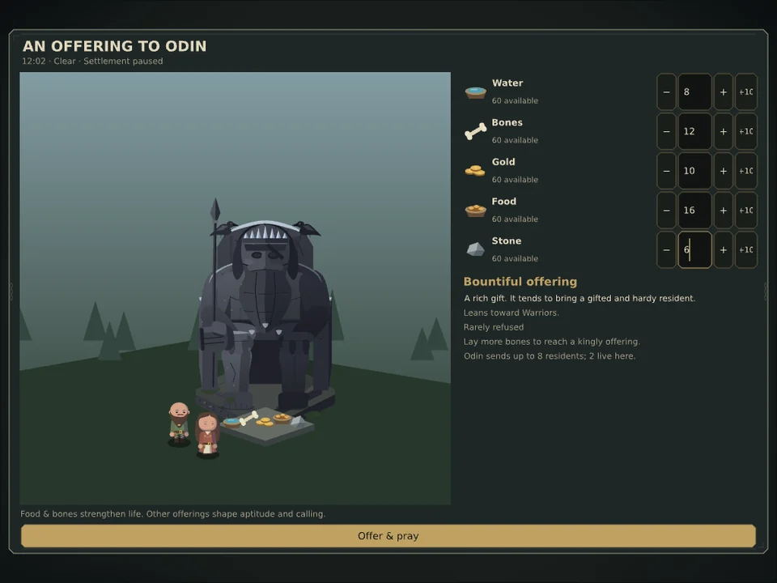
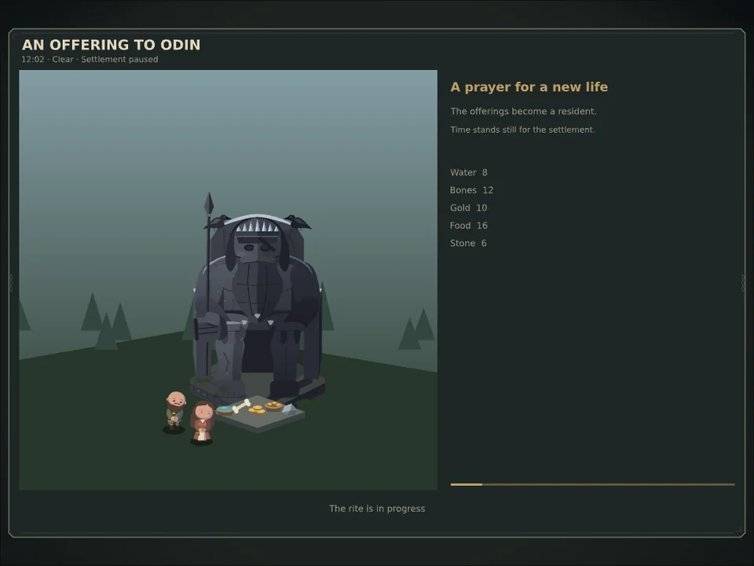
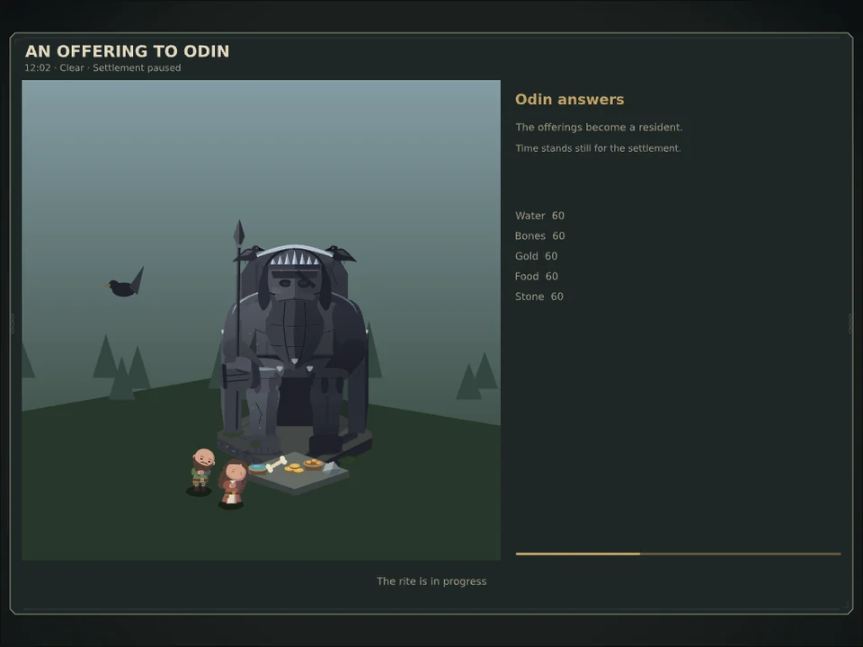
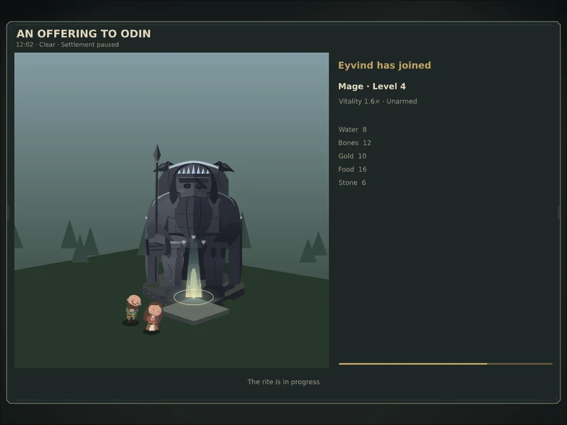
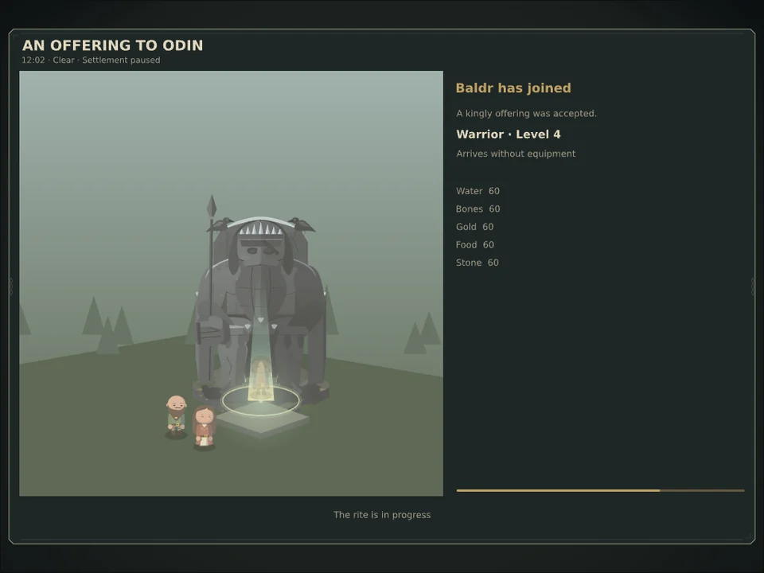
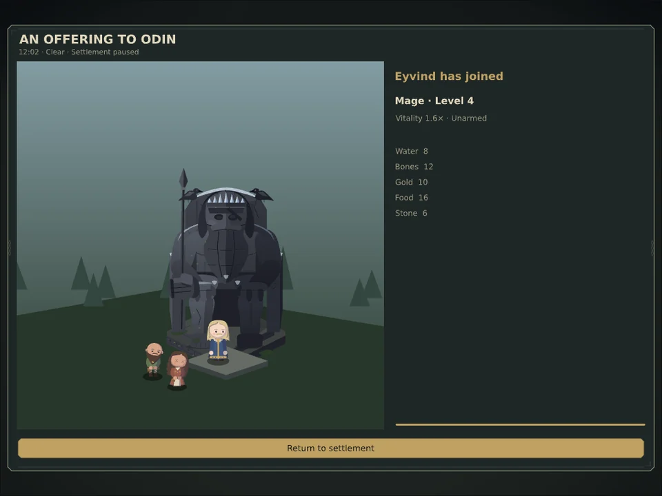
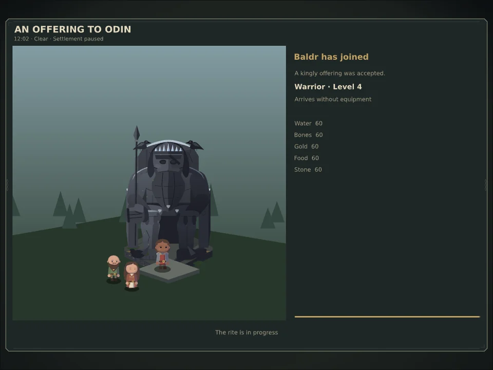
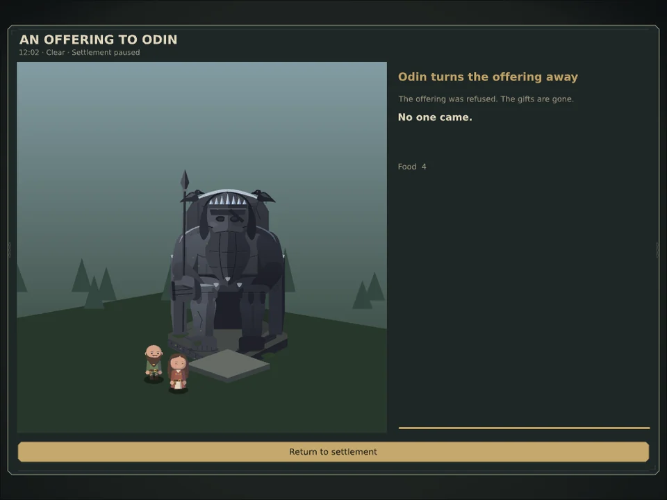
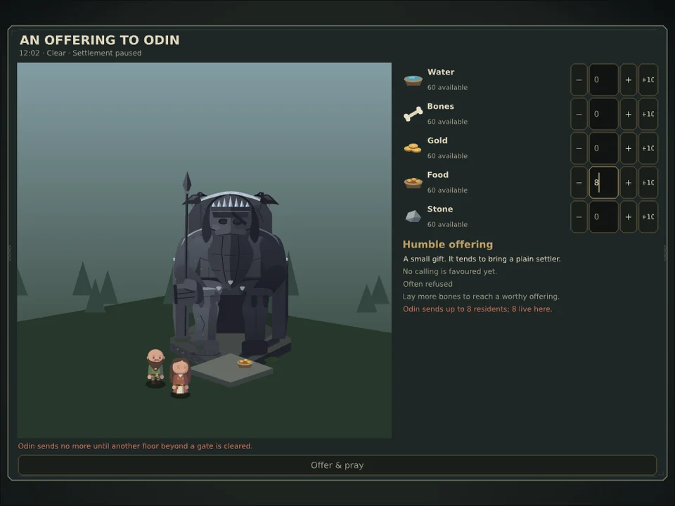
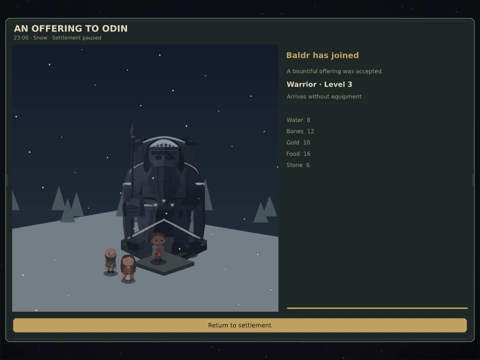
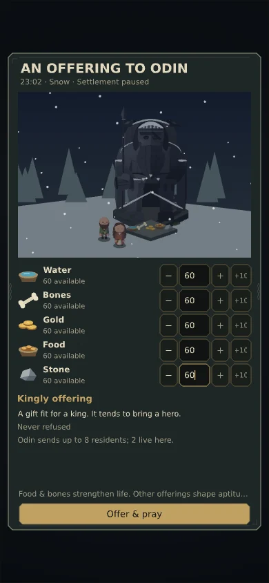